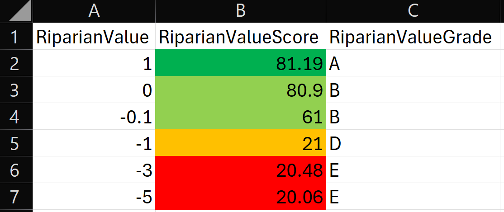
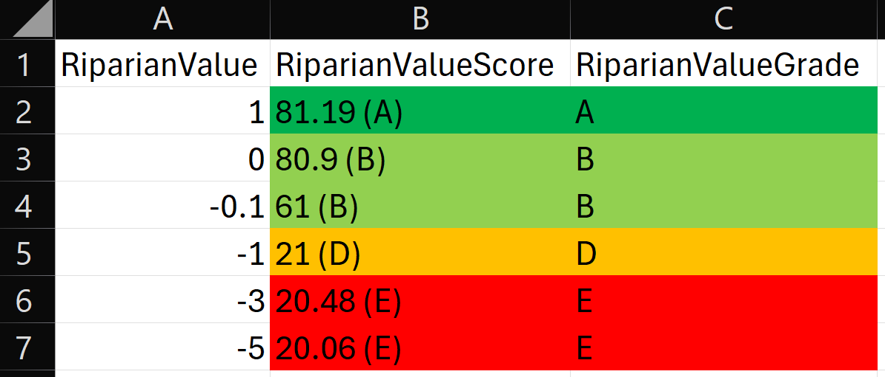
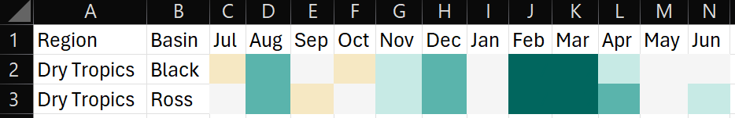
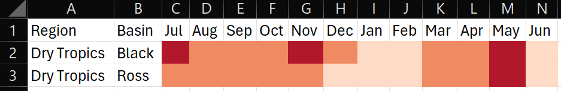
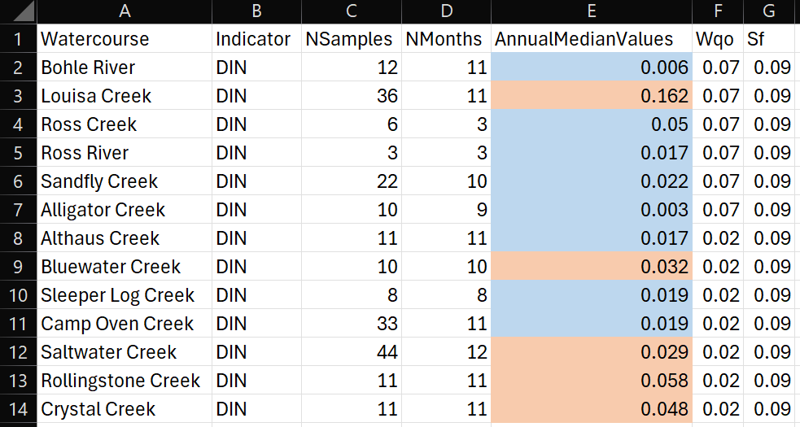
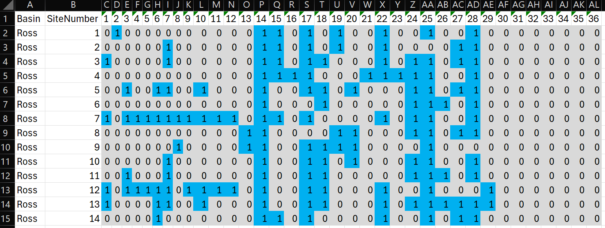

The goal of RcTools is to provide a collection of tools (functions) to be utilised by the Northern Three Report Cards’ technical staff. These tools have been written to to bridge the gap between:
- Online data resources and desktop analysis, and
- Finish analysis products and N3 technical reports.
I.e., the tools focus on tasks such as downloading data, converting values to scores, converting scores to grades, and producing stylised visual products such as plots, maps, and formatted xlsx files.
Installation
To install this package you will first need to download the RTools package and install it on your computer (accept the defaults everywhere during the installation process).
Following this, you can install the development version of RcTools from GitHub with:
# install.packages("pak")
pak::pak("add-am/RcTools")Finally, load the package just like you would any other R package:
Usage
This package currently contains 9 functions and is still expanding. Functions can be grouped under two themes:
- eReefs related functions
- Data table related functions
Functions under each theme are explained below. Alternatively, individual function documentation can be accessed with the command ?function_name.
eReefs Functions
ereefs_extract
The ereefs_extract function takes a geometry input, date, and variable, and returns a netCDF data object within those bounds.
#first a geometry object is loaded in using the sf package
sf_obj <- system.file("extdata/boundary.gpkg", package = "RcTools")
sf_obj <- sf::st_read(sf_obj)
#then the extract function can be run
nc <- ereefs_extract(
Region = sf_obj, #define the region to look at with the sf object
StartDate = "2022-03-01",
EndDate = "2022-03-03",
Variable = "Turbidity",
Downsample = 0 #downsample reduces the size of the data by taking every nth cell
)ereefs_reproject
The ereefs_reproject function takes a curvilinear netCDF object and returns a regular grid netCDF object. The curvilinear netCDF object is generally produced by the ereefs_extract function. Note, this function tends to fail when the curvilinear netCDF object has a complex border, such as at the edge of the Mackay Whitsunday Isaac region.
#reproject the data
nc <- ereefs_reproject(nc)ereefs_dotplot
The ereefs_dotplot function takes a regular grid netCDF object and returns a dotplot summarising daily values, the overall mean, and a rolling average.
#plot data
p <- ereefs_plot(
nc = nc,
Heading = "Dry Tropics",
YAxisName = "Chlorophyll a (mg/m3)",
LogTransform = TRUE
)The product of this function looks like this:
pereefs_windrose
The ereefs_windplot function takes a list regular grid netCDF objects (specifically the four objects produced when requesting wind from the ereefs_extract function) and returns a windrose plot summarising wind strength and direction.
wr_p <- ereefs_windrose(
nc = nc_2,
SubSample = 500,
Heading = "Approximated Wind Speed",
LegendTitle = "Speed (km/h)"
)The product of this function looks like this:
wr_pereefs_map
The ereefs_map function takes either a singular regular grid netCDF object, or a list regular grid netCDF objects and returns one of three different map types. Map A) is a concentration map for data such as turbidity, map B) is a true colour map that shows the “true” colour of the water, and map C) is a vector field map that provides a spatial representation of wind strength and direction.
Note that the visuals of true colour maps suffer from temporal aggregation (instead short animations should be used).
m <- ereefs_map(
nc = nc,
MapType = "Concentration",
Aggregation = "Month",
LegendTitle = "Turbidity (NTU)",
nrow = 2 #the number of rows to use if/when maps are facetted
)The product of this function looks like this:
mData Table Functions
value_to_score
The value_to_score() function is designed to calculate a variety of report card scores used by the Northern Three Report Cards. The function takes a dataframe and appends an additional column to the dataframe with the calculated scores.
Currently this function can score the following indices/indicators:
- All water quality indicators (freshwater, estuarine, and marine environments)
- Mangroves and saltmarsh
- Wetlands
- Riparian vegtation (freshwater and estuarine)
- Fish
Depending on the index/indicator a different amount of inputs are requried. Below is a example of how to use the value_to_score() function to calculate scores for water quality indicators in the freshwater environment.
First you would need to have a table of data:
#load the package
library(RcTools)
#create an example dataframe
df <- data.frame(
WQIndicator = c(rep("DIN", 3), rep("Low DO", 3)),
WQObjective = c(rep(0.02, 3), rep(90, 3)),
WQScalingFactor = c(rep(0.38, 3), rep(70, 3)),
WQValue = c(0.002, 0.017, 0.029, 65, 93, 101)
)
#calculate the twentieth and eightieth percentile values
df <- df |>
dplyr::mutate(
WQEightieth = quantile(WQValue, probs = 0.8),
WQTwentieth = quantile(WQValue, probs = 0.2)
)Then you can call the function just like any other tidyverse function. Importantly, this function has been written to be “pipe-friendly” i.e. you can use the function by itself, or in a pipe. That is to say that value_to_score(df, ...) is the same as df |> value_to_score(...):
#run the scoring function
df <- df |>
value_to_score(
value = WQValue,
value_type = "Water Quality",
water_type = "Freshwater",
indicator = WQIndicator,
wqo = WQObjective,
sf = WQScalingFactor,
eightieth = WQEightieth,
twentieth = WQTwentieth
)Note that the arguments that are not provided in quotes are flexible (i.e. they can be provided with or without quotes), this adheres to tidyverse principles. However, the two arguments that have been provided in quotes are not flexible - they must have quotes. These two arguments are handled by the function internally a different way.
Another example of the same function used to score riparian vegetation this time is as follows. Note that for this scoring method a lot less information is required. Helpers will notify you when required information is missing.
#create an example dataframe
df <- data.frame(
RiparianValue = c(1, 0, -0.1, -1, -3, -5)
)
#run the scoring function. As a demonstration, no pipe has been used this time.
df <- value_to_score(
df = df,
value = RiparianValue,
value_type = "Riparian"
)In anycase, the output of the function is the original table, now with an additional score column. The name of the score column is inherited from the name of the value column + “Score” added to the end of it - this provides an easy link back to the source of the scores. The example table above would look like this:
| RiparianValue | RiparianValueScore |
|---|---|
| 1 | 81.19 |
| 0 | 80.90 |
| -0.1 | 61.00 |
| -1 | 21.00 |
| -3 | 20.48 |
| -5 | 20.06 |
score_to_grade
The score_to_grade() function has been designed to directly follow the value_to_score() function. It takes a dataframe (with scores) and appends an additional column to the dataframe with the calculated grades.
Currently this function will provide grades that adhere to the following range:
- 81 to 100 = A
- 61 to 80 = B
- 41 to 60 = C
- 21 to 40 = D
- 0 to 20 = E
Broadly speaking, the majority of grades follow this range, should any other range be required the function will be updated.
Below is a basic example of how to use the score_to_grade() function. If for some reason you have multiple columns that contain scores, multiple columns can also be provided:
#create an example dataframe (duplicate of above table)
df <- data.frame(
RiparianValue = c(1, 0, -0.1, -1, -3, -5),
RiparianValueScore = c(81.19, 80.90, 61.00, 21.00, 20.48, 20.06)
)
#run the grading function.
df <- score_to_grade(df, RiparianValueScore)The final output would look like this:
| RiparianValue | RiparianValueScore | RiparianValueGrade |
|---|---|---|
| 1 | 81.19 | A |
| 0 | 80.90 | B |
| -0.1 | 61.00 | B |
| -1 | 21.00 | D |
| -3 | 20.48 | E |
| -5 | 20.06 | E |
save_n3_table
The save_n3_table() function is designed to take a finalised dataframe from within R (such as the one above) and save it as an excel file with formatting in the specific style used by the Northern Three Report Cards. Below is a basic example of how to use the save_n3_table() function to format a data frame for the Northern Three Report Card. We will use the table that we just created above for this example.
In the first instance, we apply styling only to the score column:
#run the "save as n3 table" function
save_n3_table(
df = df,
file_name = "Riparian Scores and Grades",
target_columns = 2,
target_rows = 1:nrow(df),
scheme = "Report Card",
)Which looks like this:

It is also possible to apply styling to the grade column as well. However, a side effect of this is the score column inherits the grades as well (as formatting is now done by character not value):
#run the "save as n3 table" function
save_n3_table(
df = df,
file_name = "Riparian Scores and Grades",
target_columns = 2:3, #note we expanded the column range
target_rows = 1:nrow(df),
scheme = "Report Card",
include_letter = TRUE
)Which looks like this:

extensions
The save_n3_table() offers several other extensions for styling choices, these are as follows:
- Report Card (with or without letter grades): This colours cell from red to green based on the standard Report Card boundaries. Demonstrated above.
- Rainfall: This colours cells from brown to blue based on average rainfall codes (1 to 7).
- Temperature: This colours cells from blue to red based on average temperature codes (1 to 7).
- Summary Statistics: This compares mean/median values against WQOs and colours cells blue for pass and orange for fail.
- Presence Absence: This colours cells based on presence (blue) and absence (grey), used for fish observation data.
Each of these extended styling options are implimented the same way, with only the scheme argument changing. The other styling choices are as follows:
Rainfall:

Temperature:

Summary statistics:

Presence absence:
